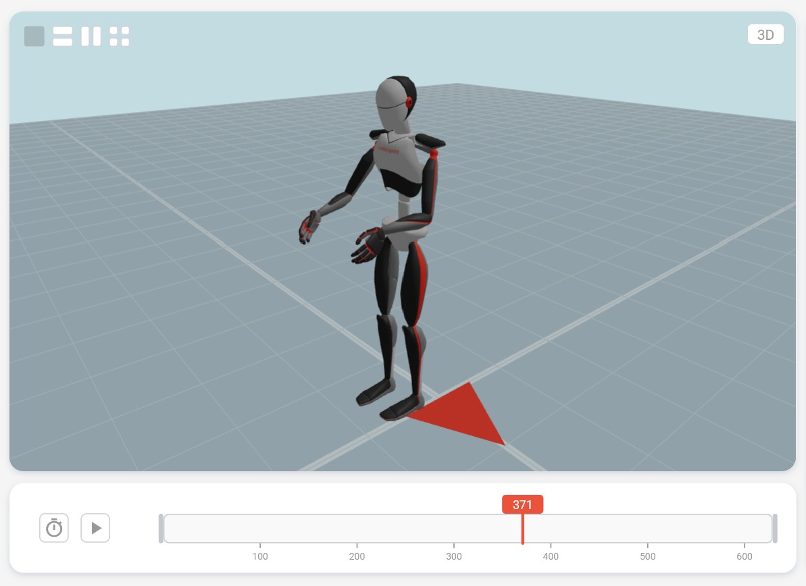
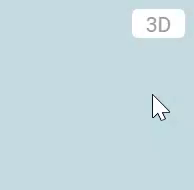

Motionprint Ergo renders motion capture data as a 3D animated avatar. This article covers the viewport controls, camera options, and playback interface you'll use to navigate and review recordings.
1The 3D Viewport
The 3D viewport is the central element of every recording view in Motionprint Ergo. It renders a full animated avatar using a 3D scene that gives you spatial context while reviewing motion data.
The scene contains several fixed elements to help you orient yourself:
- Checkerboard floor — a 25 × 25 m area with 0.5 m tile size, providing a sense of scale.
- Grid lines — fine lines at tile boundaries overlaid on the floor.
- Axis markers — darker emphasis strips running along the X and Z center lines for spatial orientation.
- Forward-direction marker — a small triangle on the floor pointing in the +Z direction, colored in your brand color, indicating which way the recorded subject was facing.
The scene uses ambient lighting (intensity 0.7) and a directional key light for realistic shading of the avatar. Your brand color (as set in Settings) is used as the highlight color on the avatar, and also colors the forward-direction marker on the floor. The viewport fully respects your interface theme — sky color, tile colors, grid lines, and avatar materials all adapt to light and dark mode.

2Viewport Layouts
The layout selector in the top-left corner of the viewport lets you split the view into multiple panels, each with its own independent camera. This is useful for monitoring posture from several angles simultaneously.
Four layouts are available:
- Single — one full-width viewport. The default.
- Two Horizontal — two viewports stacked top and bottom.
- Two Vertical — two viewports placed side by side.
- Quad — four viewports in a 2 × 2 grid.
Each panel in a multi-viewport layout has its own independent camera view and camera state. The default layout — including which of the four layouts to use and what camera view each panel should show — can be configured in Report Settings, separately for each report type and per input and result page.
3Camera Views
Each viewport has a camera view selector button in its top-right corner, showing the name of the current view (e.g., "3D"). Clicking it opens a circular menu with six preset angles.

- 3D — perspective view from a three-quarter angle. The default. Supports free orbit.
- Front — orthographic view facing the front of the avatar.
- Back — orthographic view facing the back of the avatar.
- Left — orthographic view of the avatar's left side.
- Right — orthographic view of the avatar's right side.
- Top — orthographic bird's-eye view looking straight down.
In all views, zooming focuses on the avatar's pelvis as the center point. The circular menu uses a pie-slice layout with arc segments surrounding a center "3D" button.
4Mouse & Keyboard
You navigate the 3D viewport using mouse controls. All interactions work per-viewport when multiple panels are open — the active viewport is whichever one your cursor is currently over.
| Input | Action |
|---|---|
| Left or right mouse button — drag | Rotate around the avatar (3D view only) |
| Scroll wheel | Zoom in and out, centered on the avatar's pelvis (range: 0.1 m – 20.0 m) |
| R | Reset the active viewport camera to its default position |
The right-click context menu is suppressed inside the viewport so it does not interfere with orbit controls. When your cursor is over the viewport, page scrolling is disabled to prevent accidental scroll-away while zooming.

5Playback Controls
The playback controls are located in the bar below the viewport. They let you play, pause, and adjust the speed of the animation.
Play / Pause
The play/pause button is a square button in the center of the control bar. Click it to start or stop playback. The icon switches between a play triangle and a pause symbol to reflect the current state.
Playback Speed
The speed selector is to the left of the play/pause button, marked with a stopwatch icon. Click it to open a dropdown with four options:
- 0.5× — half speed, useful for detailed inspection of individual movements.
- 1× — normal speed, matching the original recording frame rate. The default.
- 2× — double speed.
- 4× — quadruple speed, useful for quickly scanning long recordings.
Playback is driven by the recording's native frame rate, multiplied by the selected speed factor.
6Timeline & Frame Counter
The timeline spans the center of the playback controls bar and shows your current position within the recording. The frame counter to its right gives you precise frame information.
Playback Position Bar
The timeline shows a neutral background track with a colored progress overlay in your brand color. A vertical line marks the current frame position, with a small rectangular label above it showing the frame number. Click anywhere on the track to move the playhead to that point.
In report-specific contexts, additional controls appear around the viewport — including trim markers, variable selectors, score graphs, and body risk indicators. See the report specific articles for details on those features.